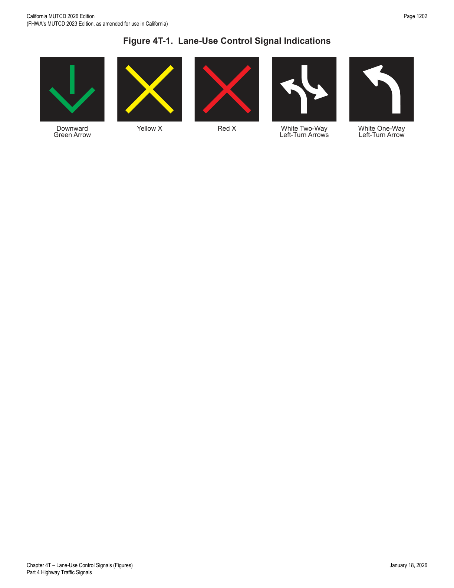

Part 4 · Highway Traffic Signals · Chapter 4T
Lane-Use Control Signals
Overhead signals — downward green arrow, yellow X, red X, and two-way/one-way left-turn arrows — used mainly for reversible-lane control and lane open/closed indication.
4T.01Application of Lane-Use Control Signals
Support — Background/Explanatory
- 01Lane-use control signals are special overhead signals that permit or prohibit the use of specific lanes of a street or highway or that indicate the impending prohibition of their use. Lane-use control signals are distinguished by placement of special signal faces over a certain lane or lanes of the roadway, over a shoulder where driving is permitted at certain times, and by their distinctive shapes and symbols. Supplementary signs are sometimes used to explain their meaning and intent.
- 02Lane-use control signals are most commonly used for reversible lane control, but are also used in certain non-reversible lane applications and for toll plaza lanes (see Section 4R.02).
Guidance — Recommended Practice
- 03An engineering study should be conducted to determine whether a reversible lane operation can be controlled satisfactorily by static signs (see Section 2B.34) or whether lane-use control signals are necessary. Lane-use control signals should be used to control reversible-lane operations if any of the following conditions are present:
- A. More than one lane is reversed in direction;
- B. Two-way or one-way left turns are allowed during peak-period reversible operations, but those turns are from a different lane than used during off-peak periods;
- C. Other unusual or complex operations are included in the reversible lane pattern;
- D. Demonstrated crash experience occurring with reversible lane operation controlled by static signs that can be corrected by using lane-use control signals at the times of transition between peak and off-peak patterns; and/or
- E. An engineering study indicates that the safety and efficiency of the traffic operations of a reversible-lane system would be improved by lane-use control signals.
Standard — Mandatory Requirement
- 04Pavement markings (see Section 3B.04) shall be used in conjunction with reversible-lane control signals.
Option — Permissive
- 05Lane-use control signals may also be used if there is no intent or need to reverse lanes, but there is a need to indicate the open or closed status of one or more lanes, such as:
- A. On a freeway, if it is desired to close certain lanes at certain hours to facilitate the merging of traffic from a ramp or other freeway;
- B. On a freeway, near its terminus, to indicate a lane that ends;
- C. On a freeway or long bridge, to indicate that a lane may be temporarily blocked by a crash, breakdown, construction or maintenance activities, or similar temporary conditions; and
- D. On a conventional road or driveway, at access or egress points to or from a facility, such as a parking garage, where one or more lanes of the access or egress are opened or closed at various times.
- 06A USE LANE(S) WITH GREEN ARROW (R10-8) sign (see Section 2B.59) may be used in conjunction with lane-use control signals.
4T.02Meaning of Lane-Use Control Signal Indications
Standard — Mandatory Requirement
- 01The meanings of lane-use control signal indications (see Figure 4T-1) shall be as follows:
- A. A steady DOWNWARD GREEN ARROW signal indication shall mean that the lane which the arrow signal indication is located over is open to vehicle travel in that direction.
- B. A steady YELLOW X signal indication shall mean that the lane which the Yellow X signal indication is located over is about to be closed to vehicle traffic in that direction and shall be followed by a steady RED X signal indication (either within the same signal face or in a downstream signal face).
- C. A steady RED X signal indication shall mean that the lane which the Red X signal indication is located over is closed to vehicle traffic in the direction viewed by the road user.
- D. A steady WHITE TWO-WAY LEFT-TURN ARROW signal indication shall mean that the lane which the turning arrows indication is located over is open to traffic making a left turn from either direction of travel, but not for through travel.
- E. A steady WHITE ONE-WAY LEFT-TURN ARROW signal indication shall mean that the lane which the turning arrow indication is located over is open to traffic making a left turn in that direction (without opposing turns in the same lane), but not for through travel.

4T.03Design of Lane-Use Control Signals
Standard — Mandatory Requirement
- 01All lane-use control signal indications shall be in units with rectangular signal faces and shall have opaque backgrounds. Except as provided in Paragraph 13 of this Section, the nominal minimum height and width of each DOWNWARD GREEN ARROW, YELLOW X, and RED X signal face shall be 18 inches for typical applications. Except as provided in Paragraph 13, the WHITE TWO-WAY LEFT-TURN ARROW and WHITE ONE-WAY LEFT-TURN ARROW signal faces shall have a nominal minimum height and width of 30 inches.
- 02Each lane to be reversed or closed shall have signal faces with at least a DOWNWARD GREEN ARROW and a RED X symbol.
- 03Each reversible lane that also operates as a two-way or one-way left-turn lane during certain periods shall have signal faces that also include the applicable WHITE TWO-WAY LEFT-TURN ARROW or WHITE ONE-WAY LEFT-TURN ARROW symbol.
- 04Each non-reversible lane immediately adjacent to a reversible lane shall have signal indications that display a DOWNWARD GREEN ARROW to traffic traveling in the permitted direction and a RED X to traffic traveling in the opposite direction.
- 05If in separate signal sections, the relative positions, from left to right, of the signal indications shall be RED X, YELLOW X, DOWNWARD GREEN ARROW, WHITE TWO-WAY LEFT-TURN ARROW, WHITE ONE-WAY LEFT-TURN ARROW.
Guidance — Recommended Practice
- 06The color of lane-use control signal indications should be clearly visible for at least 2,300 feet at all times under normal atmospheric conditions, unless otherwise physically obstructed.
- 07Lane-use control signal faces should be located approximately over the center of the controlled lane.
- 08If the area to be controlled is more than 2,300 feet in length, or if the vertical or horizontal alignment is curved, intermediate lane-use control signal faces should be located over each controlled lane at frequent intervals. This location should be such that road users will at all times be able to see at least one signal indication and preferably two along the roadway, and will have a definite indication of the lanes specifically reserved for their use.
- 09All lane-use control signal faces should be located in a straight line across the roadway approximately at right angles to the roadway alignment.
- 10On roadways having intersections controlled by traffic control signals, the lane-use control signal face should be located sufficiently far in advance of or beyond such traffic control signals to prevent them from being misconstrued as traffic control signals.
Standard — Mandatory Requirement
- 11Except as provided in Paragraph 12 of this Section, the bottom of the signal housing of any lane-use control signal face shall be a minimum of 15 feet and a maximum of 19 feet above the pavement grade.
Option — Permissive
- 12The bottom of a lane-use control signal housing may be lower than 15 feet above the pavement if it is mounted on a canopy or other structure over the pavement, but not lower than the vertical clearance of the structure.
- 13Except for lane-use control signals at toll plazas (see Section 4R.02), lane-use control signal faces with nominal height and width of 12 inches for the DOWNWARD GREEN ARROW, YELLOW X, and RED X signal faces, and lane-use control signal faces with nominal height and width of 18 inches for the WHITE TWO-WAY LEFT-TURN ARROW and WHITE ONE-WAY LEFT-TURN ARROW signal faces may be used in areas with minimal visual clutter and with speeds of less than 40 mph.
- 14Other sizes of lane-use control signal faces larger than 18 inches with proportional dimensions and with message recognition distances appropriate to signal spacing may be used for the DOWNWARD GREEN ARROW, YELLOW X, and RED X signal faces.
- 15Non-reversible lanes not immediately adjacent to a reversible lane on any street so controlled may also be provided with signal indications that display a DOWNWARD GREEN ARROW to traffic traveling in the permitted direction and a RED X to traffic traveling in the opposite direction.
- 16The signal indications provided for each lane may be in separate signal sections or may be superimposed in the same signal section.
| Signal face | Nominal minimum size (typical) | Nominal minimum size (reduced-clutter, <40 mph, non-toll) |
|---|---|---|
| Downward Green Arrow | 18 in. × 18 in. | 12 in. × 12 in. |
| Yellow X | 18 in. × 18 in. | 12 in. × 12 in. |
| Red X | 18 in. × 18 in. | 12 in. × 12 in. |
| White Two-Way Left-Turn Arrows | 30 in. × 30 in. | 18 in. × 18 in. |
| White One-Way Left-Turn Arrow | 30 in. × 30 in. | 18 in. × 18 in. |
4T.04Operation of Lane-Use Control Signals
Standard — Mandatory Requirement
- 01All lane-use control signals shall be coordinated so that all the signal indications along the controlled section of roadway are operated uniformly and consistently. The lane-use control signal system shall be designed to reliably guard against showing any prohibited combination of signal indications to any traffic at any point in the controlled lanes.
- 02For reversible lane control signals, the following combinations of signal indications shall not be simultaneously displayed over the same lane to both directions of travel:
- A. DOWNWARD GREEN ARROW in both directions,
- B. YELLOW X in both directions,
- C. WHITE ONE-WAY LEFT-TURN ARROW in both directions,
- D. DOWNWARD GREEN ARROW in one direction and YELLOW X in the other direction,
- E. WHITE TWO-WAY LEFT-TURN ARROW or WHITE ONE-WAY LEFT-TURN ARROW in one direction and DOWNWARD GREEN ARROW in the other direction,
- F. WHITE TWO-WAY LEFT-TURN ARROW in one direction and WHITE ONE-WAY LEFT-TURN ARROW in the other direction, and
- G. WHITE ONE-WAY LEFT-TURN ARROW in one direction and YELLOW X in the other direction.
- 03A moving condition in one direction shall be terminated either by the immediate display of a RED X signal indication or by a YELLOW X signal indication followed by a RED X signal indication.
- 04In either case, the duration of the RED X signal indication shall be an appropriate duration to allow traffic time to vacate the lane before any moving condition is allowed in the opposing direction.
- 05Whenever a DOWNWARD GREEN ARROW signal indication is changed to a WHITE TWO-WAY LEFT-TURN ARROW signal indication, the RED X signal indication shall continue to be displayed to the opposite direction of travel for an appropriate duration to allow traffic time to vacate the lane being converted to a two-way left-turn lane.
- 06If an automatic control system is used, a manual control to override the automatic control shall be provided.
Guidance — Recommended Practice
- 07The type of control provided for reversible lane operation should be such as to permit either automatic or manual operation of the lane-use control signals.
Standard — Mandatory Requirement
- 08If used, lane-use control signals shall be operated continuously, except that lane-use control signals that are used only for special events or other infrequent occurrences and lane-use control signals on non-reversible freeway lanes are permitted to be darkened when not in operation. The change from normal operation to non-operation shall occur only when the lane-use control signals display signal indications that are appropriate for the lane use that applies when the signals are not operated. The lane-use control signals shall display signal indications that are appropriate for the existing lane use when changed from non-operation to normal operations. Also, traffic control devices shall clearly indicate the proper lane use when the lane-use control signals are not in operation.
Support — Background/Explanatory
- 09Section 2B.34 contains additional information concerning considerations involving left-turn prohibitions in conjunction with reversible lane operations. Section 2G.24 contains additional information concerning lane-use control signals used for part-time travel on a shoulder. Section 2G.25 contains additional information concerning lane-use control signals used for active lane management on freeways and expressways.
In practice: the seven prohibited-combination rules in Paragraph 2 are the core safety logic of any reversible-lane controller — the system architecture (typically a dedicated lane-control processor separate from the intersection signal controllers) must be hard-interlocked so it is physically incapable of ever displaying a "go" indication to one direction at the same time as a "go" or "turn" indication to the opposing direction in the same lane.
★ Key Takeaways — Chapter 4T
- Five lane-use control signal indications: steady DOWNWARD GREEN ARROW (lane open, that direction), steady YELLOW X (about to close), steady RED X (closed), WHITE TWO-WAY LEFT-TURN ARROW (left turns from either direction, no through), and WHITE ONE-WAY LEFT-TURN ARROW (left turn from one direction only, no through).
- Typical minimum sizes: 18 in. × 18 in. for green arrow/yellow X/red X, 30 in. × 30 in. for the turn-arrow faces (12 in./18 in. reduced sizes allowed in low-clutter, <40 mph, non-toll-plaza settings); color must be visible at least 2,300 feet.
- Mounting height: 15–19 feet above pavement (may be lower on a canopy, not below its vertical clearance); reversible lanes require pavement markings in conjunction (Section 3B.04).
- Seven specific opposing-direction indication combinations are always prohibited (e.g., green arrow both ways, green one way and yellow/turn-arrow the other) — the control system must be engineered to make these combinations physically impossible, with a manual override always available for any automatic system.
- Lane-use control signals generally must run continuously; they may go dark only for special events or non-reversible freeway lanes, and only while displaying (or transitioning to/from) an indication appropriate to the underlying lane use.